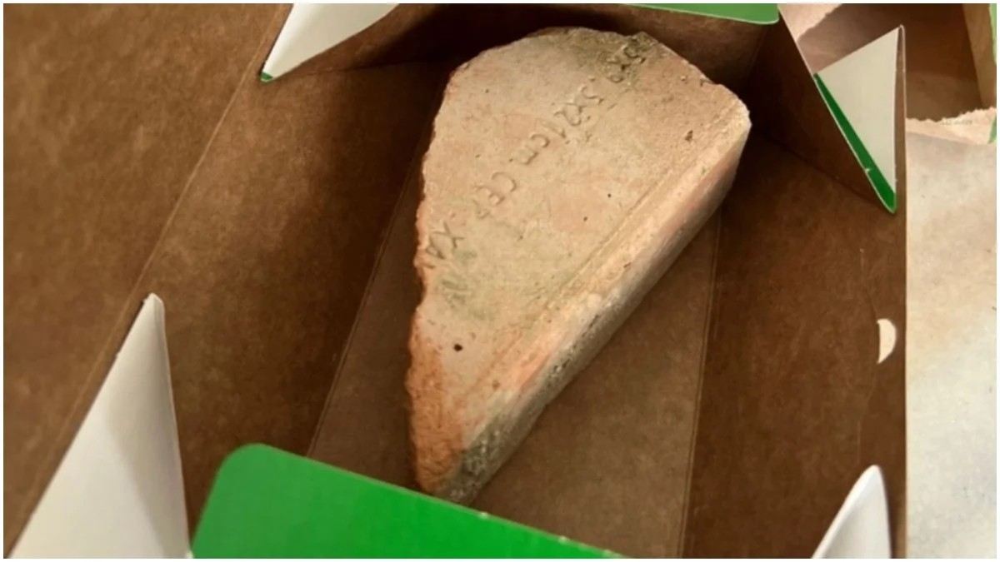

Principais noticias de Minas Gerais!
Cliente do ifood recebe tijolo em vez de sanduíche em BH: 'o mundo não está conspirando para que eu seja fitness'
Cliente publicou relato nas redes sociais e passou intervalo de almoço do trabalho comendo coxinha "ela ate achou esquisito porque o entregador chegou com a caixinha pediu o código e saiu correndo" contou Liliane. Clique aqui para mais informações.
Coudet celebra clsssificação, mas admite que Atlético-mg não esta na sua melhor vesão

Após a vitória por 3 a 1 contra o Carabobo, o técnico do Atlético-MG comemorou o resultado e a classificação na Libertadores. Entretanto, o comandante argentino ressalto que ainda há muitas correções a fazer, para que a equipe chegue em sua "melhor versão". Clique aqui para mais informações.
'Operação Dark Book' em BH combate fraude ao Fisco que causou prejuízo de R$ 62 milhões aos cofres públicos.

A Polícia Federal (PF) e a Receita Federal fazem, na manhã desta terça-feira (7), a "Operação Dark Book” para combater fraudes contra o Fisco. De acordo com as investigações, o prejuízo aos cofres público chega a R$ 62 milhões. Clique aqui para mais informações